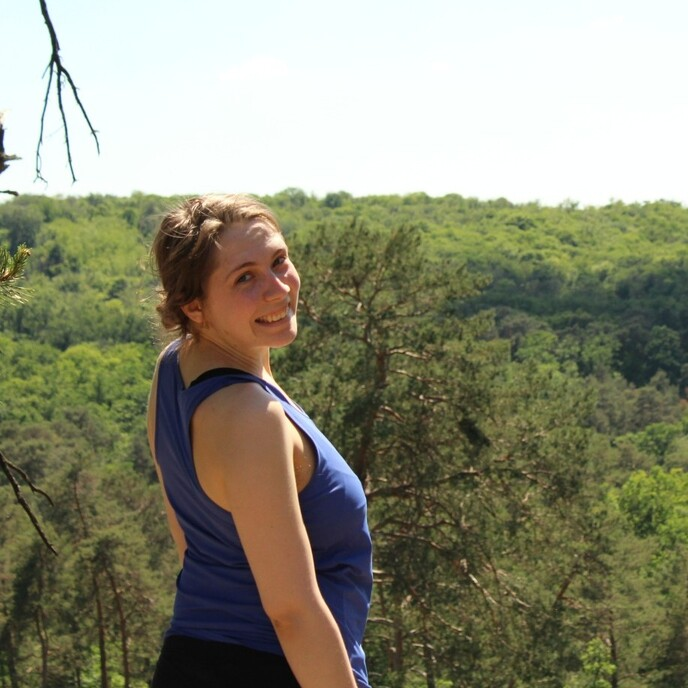

Je suis docteure en biologie computationnelle et biologie de synthèse. Je travaille actuellement sur l’évolution dirigée de Bacillus subtilis, une sympathique bactérie à Gram-positif. Mon travail met l’accent sur la modélisation de l’évolution dirigée. Par conséquent, je partage mon temps entre la paillasse - le wetlab - et l’ordinateur - le drylab.
Je m’intéresse aussi à la communication et au journalisme scientifique, et je suis toujours prête à vulgariser mon travail - mais pas que !
Compétences
Rédaction d’articles de vulgarisation scientifique
Création, animation et montage de podcasts scientifiques
Présentation du fonctionnement de la recherche et vulgarisation scientifique face public
Microbiologie, génétique et bioinformatique